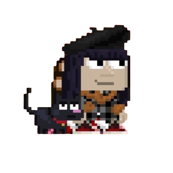

growtopia was one of the most important games of my childhood, and my account is calculating... days old.
Sadly, the game isnt the same from that time, now ubisoft bought it and its full of casinos and bots.
sometimess i even dream about the game, of my account being hacked or my world griefed, in some of them i recall me /msg'ing the mods because a hacker was breaking my world...
so crazy to think the game i played when i was 10 was so important its printed in my brain/dreams.
